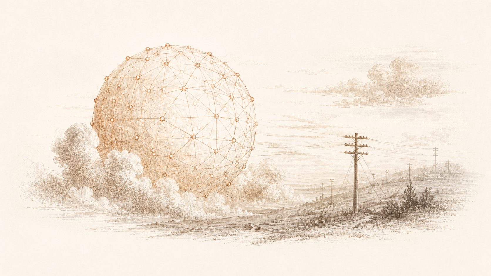
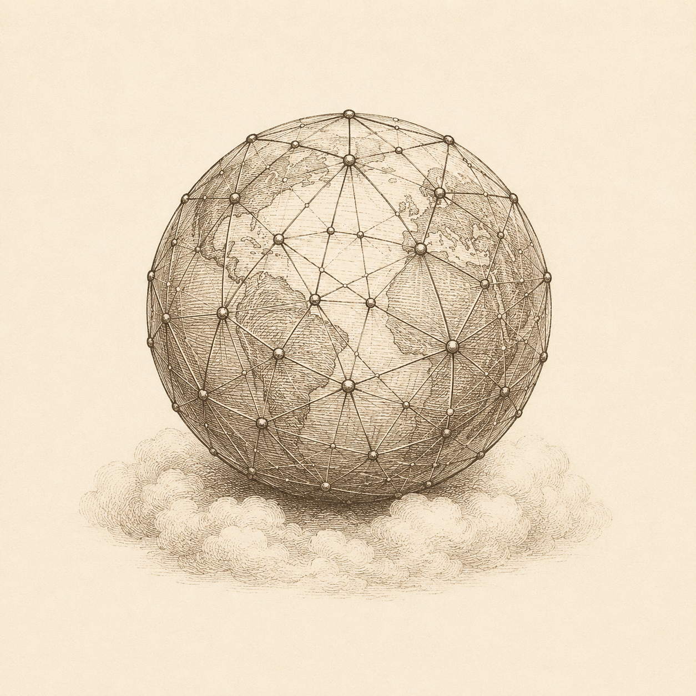
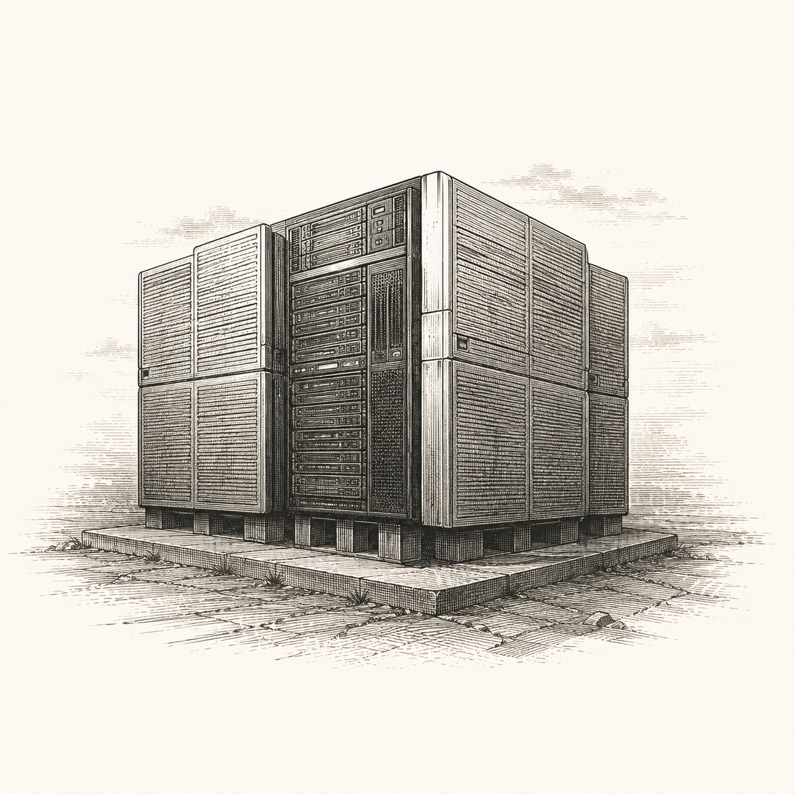

Cycle I
From Utopian Dawn to the Splinternet
The first wave of AI imagination, the open internet creed, and the sovereign rebuttal that hardened into fragmented infrastructure.

The Utopian Dawn

Read moduleThe Rebuttal
Read moduleThe Rupture
Read moduleThe Splinternet Accelerates

Read module